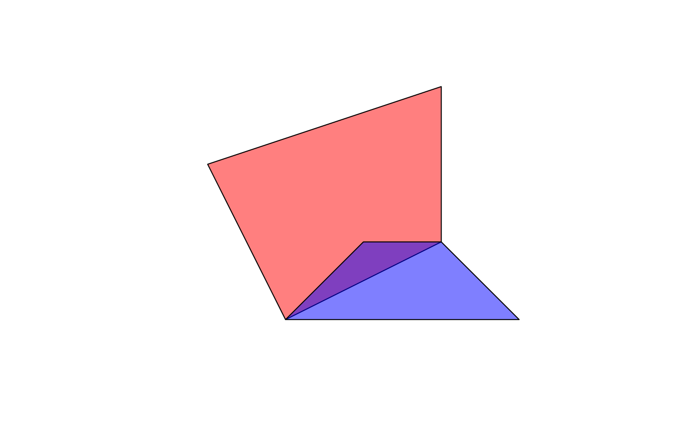

R/utils.R
get_poly_attribute.RdFor example, self_union produces a SpatialPolygonsDataFrame
that has a column called union_df, which contains a data.frame
for each polygon with the attributes from the constituent polygons.
get_poly_attribute(x, col, fun, ...)
| x | the list-column in the (SpatialPolygons)DataFrame that contains nested data.frames |
|---|---|
| col | the column in the nested data frames from which to retrieve/calculate attributes |
| fun | function to determine the resulting single attribute from overlapping polygons |
| ... | other parameters passed on to |
An atomic vector of the same length as x
if (require(sp)) { p1 <- Polygon(cbind(c(2,4,4,1,2),c(2,3,5,4,2))) p2 <- Polygon(cbind(c(5,4,3,2,5),c(2,3,3,2,2))) ps1 <- Polygons(list(p1), "s1") ps2 <- Polygons(list(p2), "s2") spp <- SpatialPolygons(list(ps1,ps2), 1:2) df <- data.frame(a = c(1, 2), b = c("foo", "bar"), c = factor(c("high", "low"), ordered = TRUE, levels = c("low", "high")), stringsAsFactors = FALSE) spdf <- SpatialPolygonsDataFrame(spp, df, match.ID = FALSE) plot(spdf, col = c(rgb(1, 0, 0,0.5), rgb(0, 0, 1,0.5))) unioned_spdf <- self_union(spdf) get_poly_attribute(unioned_spdf$union_df, "a", sum) get_poly_attribute(unioned_spdf$union_df, "c", max) }#>#>#> [1] high low high #> Levels: low < high